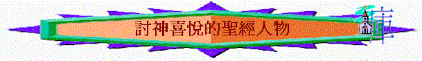

[ Home ] [ 經卷課程 ] [ 查經資料 ] [ 栽培課程 ] [ 事奉培訓 ] [ 聚會資源 ] [ 佈道資源 ] [ 胸懷普世 ] [ 異端異教 ] [ 信息分享 ] [ 專題研究 ] [ 祈禱專題 ] [ 詩歌簡譜 ] [ 動畫之廊 ] [ 輔導關懷 ] [ 站長聯絡 ]
討神喜悅的聖經人物--緒論 討神喜悅的聖經人物--古人 討神喜悅的聖經人物--所羅門 討神喜悅的聖經人物--以色列人 討神喜悅的聖經人物--耶穌